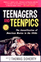
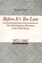
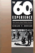

|
Upon the Ruins of Liberty
Slavery, the President's House at Independence National Historical Park, and Public Memory
Aden, Roger C.
New in Paperback!
246 pp � 6x9 � Spring 2017
paper 978-1-4399-1200-3
cloth 978-1-43991-199-0 |

|
Ethnic
Pride, American Patriotism
Slovaks and Other New Immigrants in the Interwar Era
Alexander, June Granatir
296 pp • 6x9 • Spring 2004
paper 978-1-59213-252-2
cloth 978-1-59213-251-5
|

|
From Slave Ship to Supermax
Mass Incarceration, Prisoner Abuse, and the New Neo-Slave Novel
Alexander, Patrick Elliot
266 pp • 6x9 • Fall 2017
paper 978-1-4399-1415-1
cloth 978-1-4399-1414-4 |

|
Education
for Struggle
The American Labor Colleges of the 1920s and 1930s
Altenbaugh, Richard J.
339 pp • 6x9 • Spring 1990
cloth 978-0-87722-680-2
|

|
Dark Days in the Newsroom
McCarthyism Aimed at the Press
Alwood, Edward
216 pp • 5.5x8.25 • Spring 2007
paper 978-1-59213-342-0
cloth 978-1-59213-341-3
|

|
Death
in the Dining Room and Other Tales of Victorian Culture
Ames, Kenneth L.
280 pp • 6x9 • Spring 1990
paper 978-1-56639-333-1
cloth 978-0-87722-891-2
|

|
Policing
Women
The Sexual Politics of Law Enforcement and the LAPD
Appier, Janis
256 pp • 6x9 • Fall 1997
paper 978-1-56639-560-1
cloth 978-1-56639-559-5
|
 |
Vigilantes and Lynch Mobs
Narratives of Community and Nation
Arellano, Lisa
204 pp • 6x9 • Fall 2012
paper 978-1-4399-0845-7
cloth 978-1-4399-0844-0
|
|
Saving
the Waifs
Ashby, LeRoy
256 pp • 6x9 • Fall 1997
cloth 978-0-87722-337-5
|

|
Understanding
Mainland Puerto Rican Poverty
Baker, Susan S.
256 pp • 6x9 • Fall 2002
paper 978-1-56639-970-8
cloth 978-1-56639-969-2
|

|
Social
Darwinism
Science and Myth in Anglo-American Social Thought
Bannister, Robert C.
Revised Edition
292 pp • Fall 1988
paper 978-0-87722-566-9
cloth 978-0-87722-155-5
|

|
God
in the Street
New York Writing from The Penny Press to Melville
Bergmann, Hans
272 pp • 6x9 • Fall 1995
paper 978-1-56639-358-4
cloth 978-1-56639-357-7
|
|
My
Diary North and South
William Howard Russell
edited by Berwanger, Eugene H.
384 pp • Fall 1987
cloth 978-0-87722-522-5 |

|
Reading Up
Middle-Class Readers and the Culture of Success in the Early Twentieth-Century United States
Blair, Amy L.
264 pp • 6x9 • Fall 2011
paper 978-1-4399-0668-2
cloth 978-1-4399-0667-5
|

|
Backyard
Revolution
Understanding the New Citizen Movement
Boyte, Harry C.
288 pp • Fall 1980
paper 978-0-87722-229-3
cloth 978-0-87722-192-0 |

|
Catskill
Culture
A Mountain Rat's Memories of the Great Jewish Resort Area
Brown, Phil
304 pp • 7x10 • Fall 1998
paper 978-1-59213-189-1
cloth 978-1-56639-642-4
|

|
Paths
into American Culture
Burnham, John C.
Fall 1987
cloth 978-0-87722-505-8 |

|
The
Smoke of the Gods
A Social History of Tobacco
Burns, Eric
296 pp • 6x9 • Fall 2006
cloth 978-1-59213-480-9
|

|
The
Spirits of America
A Social History of Alcohol
Burns, Eric
344 pp • 6x9 • Fall 2003
paper 978-1-59213-269-0
cloth 978-1-59213-214-0
|

|
Invasion of the Mind Snatchers
Television's Conquest of America in the Fifties
Burns, Eric
352 pp • 6x9 • Fall 2010
cloth 978-1-4399-0288-2
|
 |
Tensions in the American Dream
Rhetoric, Reverie, or Reality
Bush, Melanie E. L. and Roderick D. Bush
258 pp • 6x9 • Fall 2014
paper 978-1-59213-838-8
cloth 978-1-59213-837-1 |
 |
The End of White World Supremacy
Black Internationalism and the Problem of the Color Line
Bush, Roderick
264 pp • 6x9 • Spring 2009
paper 978-1-59213-573-8
cloth 978-1-59213-572-1
|

|
For
Fun and Profit
The Transformation of Leisure into Consumption
edited by Butsch, Richard
288 pp • Spring 1990
paper 978-0-87722-740-3
cloth 978-0-87722-676-5 |

|
Wash
and Be Healed
The Water-Cure Movement and Women's Health
Cayleff, Susan E.
257 pp • Spring 1987
paper 978-0-87722-859-2
cloth 978-0-87722-462-4
|

|
Chinese
American Transnationalism
The Flow of People, Resources, and Ideas between China and America
during the Exclusion Era
edited by Chan, Sucheng
312 pp • 6x9 • Fall 2005
paper 978-1-59213-435-9
cloth 978-1-59213-434-2
|

|
Chinese Americans and the Politics of Race and Culture
edited
by Chan, Sucheng and Madeline Y. Hsu 288 pp • 6x9 • Spring 2008
paper 978-1-59213-753-4
cloth 978-1-59213-752-7
|

|
Entry
Denied
Exclusion and the Chinese Community in America, 1882-1943
Chan, Sucheng
320 pp • Spring 1991
paper 978-1-56639-201-3
cloth 978-0-87722-798-4 |

|
Elie
Wiesel and the Politics of Moral Leadership
Chmiel, Mark
248 pp • 6x9 • Spring 2001
cloth 978-1-56639-857-2
|
 |
Ball Don't Lie!
Myth, Genealogy, and Invention in the Cultures of Basketball
Colás, Yago
228 pp • 6x9 • Spring 2016
paper 978-1-4399-1243-0
cloth 978-1-4399-1242-3
|

|
Acres
of Diamonds
Conwell, Russell H., foreword by Russell F. Weigley, introduction
by David Adamany
96 pp • 5x7 • Spring 2002
cloth 978-1-56639-962-3
|
|
Cowboys
as Cold Warriors
The Western and U.S. History
Corkin, Stanley
288 pp • 6x9 • Spring 2004
paper 978-1-59213-254-6
cloth 978-1-59213-253-9
|

|
A
Revolution of the Heart
Essays on the Catholic Worker
edited by Coy, Patrick G., foreword by Jim Douglass
408 pp • Spring 1988
cloth 978-0-87722-531-7 |

|
Religion
and Radical Politics
An Alternative Christian Tradition in the United States
Craig, Robert H.
320 pp • 6x9 • Fall 1992
paper 978-1-56639-335-5
cloth 978-0-87722-973-5
|

|
Worktime
and Industrialization
An International History
edited by Cross, Gary
256 pp • Fall 1988
cloth 978-0-87722-582-9 |
|
Freedom
at Risk
Secrecy, Censorship, and Repression in the 1980s
edited by Curry, Richard O.
448 pp • Fall 1988
paper 978-0-87722-660-4
cloth 978-0-87722-543-0 |

|
Mind's
Eye, Mind's Truth
FSA Photography Reconsidered
Curtis, James
160 pp • 9x10 • Fall 1989
paper 978-0-87722-823-3
cloth 978-0-87722-627-7 |

|
Woman's
Place Is at the Typewriter
Office Work and Office Workers, 1870-1930
Davies, Margery W.
256 pp • Fall 1982
paper 978-0-87722-368-9
cloth 978-0-87722-291-0 |

|
Conspicuous
Production
Automobiles and Elites in Detroit, 1899-1933
Davis, Donald Finlay
320 pp • Fall 1988
cloth 978-0-87722-549-2 |

|
Making
History Matter
Dawidoff, Robert
304 pp • 6x9 • Fall 1999
paper 978-1-56639-749-0
cloth 978-1-56639-748-3
|

|
Out
in the South
edited by Dews, Carlos L. and Carolyn Leste Law
256 pp • 7x10 • Fall 2000
paper 978-1-56639-814-5
cloth 978-1-56639-813-8
|
 |
Teenagers
and Teenpics
The Juvenilization of American Movies in the 1950s
Doherty, Thomas
Revised and Expanded Edition
288 pp • 6x9 • Spring 2002
paper 978-1-56639-946-3
cloth 978-1-56639-945-6
|

|
"I Hear America Singing"
Folk Music and National Identity
Donaldson, Rachel Clare
234 pp • 6x9 • Fall 2014
paper 978-1-43991-079-5
cloth 978-1-43991-078-8 |

|
Black Regions of the Imagination
African American Writers between the Nation and the World
Dunbar, Eve
232 pp • 5.5x8.25 • Fall 2012
paper 978-1-4399-0943-0
cloth 978-1-4399-0942-3
|
|
The Archival Turn in Feminism
Outrage in Order
Eichhorn, Kate
208 pp • 5.5x8.5 • Fall 2013
paper 978-1-4399-0952-2
cloth 978-1-4399-0951-5
|

|
Labor
at the Ballot Box
The Massachusetts Prevailing Wage Campaign of 1988
Erlich, Mark
232 pp • Fall 1990
cloth 978-0-87722-727-4 |
 |
Muhammad Ali
The Making of an Icon
Ezra, Michael
248 pp • 6x9 • Fall 2008
paper 978-1-59213-662-9
cloth 978-1-59213-661-2
|

|
The
Baltimore Book
New Views of Local History
edited by Fee, Elizabeth, Linda Shopes and Linda Zeidman
256 pp • Fall 1991
paper 978-1-56639-184-9
cloth 978-0-87722-817-2 |

|
Abandoned
to Their Fate
Social Policy and Practice Toward Severely Retarded People in
America, 1820-1920
Ferguson, Philip M.
232 pp • 5.5x8.25 • Spring 1994
cloth 978-1-56639-154-2 |

|
The
Souls of the Skyscraper
Female Clerical Workers in Chicago, 1870-1930
Fine, Lisa M.
264 pp • Spring 1990
cloth 978-0-87722-674-1 |

|
She's Got a Gun
Floyd, Nancy
256 pp • 7x10 • Fall 2007
paper 978-1-59213-155-6
cloth 978-1-59213-154-9
|
|
American
Communism and Black Americans
A Documentary History, 1930-1934, Volume 2
Foner, Philip S. and Herbert Shapiro
416 pp • Fall 1990
cloth 978-0-87722-761-8 |

|
Black
Workers
A Documentary History from Colonial Times to the Present
edited by Foner, Philip S. and Ronald L. Lewis
400 pp • Fall 1988
paper 978-0-87722-554-6
cloth 978-0-87722-592-8 |

|
Trade
Union Gospel
Christianity and Labor in Industrial Philadelphia, 1865-1915
Fones-Wolf, Ken
260 pp • Fall 1989
cloth 978-0-87722-652-9 |

|
Sex and the Founding Fathers
The American Quest for a Relatable Past
Foster, Thomas A.
232 pp • 6x9 • Spring 2014
cloth 978-1-4399-1102-0 |
|
To The City
Urban Photographs of the New Deal
Foulkes, Julia L.
142 pp • 6x9 • Fall 2010
paper 978-1-59213-998-9
cloth 978-1-59213-997-2
|
 |
Choices and Changes
Interest Groups in the Electoral Process
Franz, Michael M.
240 pp • 5.5x8.25 • Spring 2008
paper 978-1-59213-674-2
cloth 978-1-59213-673-5
|

|
Transient Images
Personal Media in Public Frameworks
Freedman, Eric
230 pp • 6x9 • Fall 2010
paper 978-1-4399-0327-8
cloth 978-1-4399-0326-1
|
|
Organizing
Asian American Labor
The Pacific Coast Canned-Salmon Industry, 1870-1942
Friday, Chris
296 pp • 6x9 • Spring 1994
paper 978-1-56639-398-0
cloth 978-1-56639-139-9 |

|
Commentary
in American Life
edited by Friedman, Murray
232 pp • 6x9 • Spring 2005
paper 978-1-59213-106-8
cloth 978-1-59213-105-1
|

|
One Less Car
Bicycling and the Politics of Automobility
Furness, Zack
360 pp • 6x9 • Spring 2010
paper 978-1-59213-613-1
cloth 978-1-59213-612-4
|

|
Philadelphia
Jewish Life, 1940-2000
edited by Friedman, Murray, afterword by Dan Rottenberg
328 pp • 8.375x10.875 • Fall 2002
cloth 978-1-56639-999-9
|
|
Another Chance
The Life of an American Insurgent
Gilbert, James
256 pp • Spring 1981
cloth 978-0-87722-224-8 |

|
Arsenio
Rodríguez and the Transnational Flows of Latin Popular Music
Garcia, David F.
224 pp � 6x9 � Spring 2006
paper 978-1-59213-386-4
cloth 978-1-59213-385-7
|

|
Mary Heaton Vorse
The Life of an American Insurgent
Garrison, Dee
400 pp • Spring 1989
paper 978-0-87722-781-6
cloth 978-0-87722-601-7 |
 |
Pimping Fictions
African American Crime Literature and the Untold Story of Black Pulp Publishing
Gifford, Justin
216 pp • 6x9 • Spring 2013
paper 978-1-4399-0811-2
cloth 978-1-4399-0810-5
|

|
Hollywood
Modernism
Film and Politics in the Age of the New Deal
Giovacchini, Saverio
304 pp • 6x9 • Spring 2001
paper 978-1-56639-863-3
cloth 978-1-56639-862-6
|

|
The
Fragile Bridge
Paterson Silk Strike, 1913
Golin, Steve
328 pp • 6x9 • Spring 1988
paper 978-1-56639-005-7
cloth 978-0-87722-534-8 |

|
The Day the Dancers Stayed
Performing in the Filipino/American Diaspora
Gonzalves, Theodore S.
228 pp • 5.5x8.25 • Fall 2009
paper 978-1-59213-729-9
cloth 978-1-59213-728-2
|

|
The
World the Sixties Made
Politics and Culture in Recent America
edited by Gosse, Van and Richard Moser
352 pp • 6x9 • Fall 2003
paper 978-1-59213-201-0
cloth 978-1-59213-200-3
|

|
Urban
Elders
Family, Work, and Welfare Among Boston's Aged, 1890-1950
Gratton, Brian
256 pp • Fall 1985
cloth 978-0-87722-390-0 |

|
Sparks
from the Anvil of Oppression
Philadelphia's African Methodists and Southern Migrants, 1890-1940
Gregg, Robert
272 pp • 6x9 • Fall 1993
paper 978-1-56639-664-6
cloth 978-1-56639-063-7 |

|
The
Crisis of American Labor
Operation Dixie and the Defeat of the CIO
Griffith, Barbara S.
240 pp • Fall 1987
cloth 978-0-87722-503-4 |

|
San Francisco's International Hotel
Mobilizing the Filipino American Community in the Anti-Eviction Movement
Habal, Estella
256 pp • 6x9 • Spring 2008
paper 978-1-59213-446-5
cloth 978-1-59213-445-8
|
|
America's First Adventure in China
Trade, Treaties, Opium, and Salvation
Haddad, John R.
294 pp • 6x9 • Spring 2013
paper 978-1-4399-0690-3
cloth 978-1-4399-0689-7
|

|
Silver
Cities
The Photography of American Urbanization, 1839-1915
Hales, Peter Bacon
315 pp • Fall 1983
paper 978-0-87722-399-3
cloth 978-0-87722-299-6 |

|
William
Henry Jackson and the Transformation of the American Landscape
Hales, Peter B.
368 pp • 11x8.5 • Spring 1988
paper 978-1-56639-463-5
cloth 978-0-87722-478-5 |

|
The Americanization of Social Science
Intellectuals and Public Responsibility in the Postwar United States
Haney, David Paul
296 pp • 6x9 • Fall 2007
paper 978-1-59213-714-5
cloth 978-1-59213-713-8
|

|
The American Dream in the 21st Century
edited by Hanson, Sandra L. and John Kenneth White
168 pp • 5.5x8.25 • Spring 2011
paper 978-1-4399-0315-4
cloth 978-1-4399-0314-8
|

|
Fred
Allen's Radio Comedy
Havig, Alan
296 pp • Fall 1990
paper 978-0-87722-810-3
cloth 978-0-87722-713-7 |

|
Framing the Audience
Art and the Politics of Culture in the United States, 1929-1945
Helfgott, Isadora Anderson
326 pp • 6x9 • Fall 2015
paper 978-1-4399-1178-5
cloth 978-1-4399-1177-8 |

|
California
and the Fictions of Capital
Henderson, George L.
304 pp • 6.125x9.25 • Spring 2003
paper 978-1-59213-198-3
|

|
Dilemmas
of the American Self
Hewitt, John P.
304 pp • Fall 1989
paper 978-0-87722-837-0
cloth 978-0-87722-656-7 |

|
It
Comes from the People
Community Development and Local Theology
Hinsdale, Mary Ann, Helen M. Lewis and S. Maxine Waller
400 pp • 6x9 • Fall 1994
paper 978-1-56639-212-9
cloth 978-1-56639-211-2
|
 |
Life in and against the Odds
Debts of Freedom and the Speculative Roots of U.S. Culture
Hoechst, Heidi
300 pp • 6x9 • Fall 2015
paper 978-1-43991-218-8
cloth 978-1-43991-217-1 |
|
Savoring the Salt
The Legacy of Toni Cade Bambara
edited by Holmes, Linda Janet and Cheryl A. Wall
320 pp • 6x9 • Fall 2007
paper 978-1-59213-625-4
cloth 978-1-59213-624-7
|
 |
Before
It's Too Late
The Child Guidance Movement in the United States, 1922-1945
Horn, Margo
260 pp • Spring 1989
cloth 978-0-87722-589-8 |
|
Black Communists Speak on Scottsboro
A Documentary History
edited by Howard, Walter T.
208 pp • 5.5x8.25 • Fall 2007
cloth 978-1-59213-597-4
|
|
The
African American Jeremiad
Appeals for Justice in America
Howard-Pitney, David
Revised and Expanded Edition
288 pp • 5.5x8.25 • Fall 2005
paper 978-1-59213-415-1
cloth 978-1-59213-328-4
|
|
Free Time
The Forgotten American Dream
Hunnicutt, Benjamin Kline
250 pp • 6x9 • Spring 2013
paper 978-1-4399-0715-3
cloth 978-1-4399-0714-6 |

|
Work
Without End
Abandoning Shorter Hours for the Right to Work
Hunnicutt, Benjamin Kline
416 pp • Spring 1988
paper 978-0-87722-763-2
cloth 978-0-87722-520-1 |

|
Beyond Preservation
Using Public History to Revitalize Inner Cities
Hurley, Andrew
248 pp • 6x9 • Spring 2010
paper 978-1-43990-229-5
cloth 978-1-43990-228-8
|

|
For Both Cross and Flag
Catholic Action, Anti-Catholicism, and National Security Politics in World War II San Francisco
Issel, William
216 pp • 5.5x8.25 • Fall 2009
cloth 978-1-4399-0028-4
|

|
The
Sons and Daughters of Los
Culture and Community in L.A.
edited by James, David E.
264 pp • 7x10 • Spring 2003
paper 978-1-59213-013-9
cloth 978-1-59213-012-2
|

|
The Story Is True
The Art and Meaning of Telling Stories
Jackson, Bruce
256 pp • 5.5x8.25 • Spring 2007
cloth 978-1-59123-607-0
cloth 978-1-59123-606-3
|

|
Pictures from a Drawer
Prison and the Art of Portraiture
Jackson, Bruce
192 pp • 7x10 • Spring 2009
paper 978-1-59213-949-1
cloth 978-1-59213-948-4
|
 |
Model City Blues
Urban Space and Organized Resistance in New Haven
Jackson, Mandi Isaacs
296 pp • 6x9 • Spring 2008
paper 978-1-59213-604-9
cloth 978-1-59213-603-2
|
 |
How to Be South Asian in America
Narratives of Ambivalence and Belonging
jain, anupama
288 pp • 6x9 • Spring 2011
paper 978-1-4399-0303-2
cloth 978-1-4399-0302-5
|
|
Stan
Brakhage
Filmmaker
edited by James, David E.
248 pp • 6x9 • Spring 2005
paper 978-1-59213-272-0
cloth 978-1-59213-271-3
|

|
A
Needle, a Bobbin, a Strike
Women Needleworkers in America
edited by Jensen, Joan M. and Sue Davidson
256 pp • Fall 1984
paper 978-0-87722-407-5
cloth 978-0-87722-340-5 |

|
Accent
on Privilege
English Identities and Anglophilia in the U.S.
Jones, Katharine W.
304 pp • 6x9 • Fall 2001
paper 978-1-56639-901-2
cloth 978-1-56639-900-5
|

|
Pop
Music and the Press
edited by Jones, Steve
288 pp • 6x9 • Fall 2002
paper 978-1-56639-966-1
cloth 978-1-56639-965-4
|

|
Helping
America's Families
Kahn, Alfred H. and Sheila B. Kamerman
311 pp • Fall 1981
cloth 978-0-87722-212-5 |
 |
Men's College Athletics and the Politics of Racial Equality
Five Pioneer Stories of Black Manliness, White Citizenship, and American Democracy
Kaliss, Gregory J.
248
pp • 6x9 • Spring 2012
paper 978-1-4399-0857-0
cloth 978-1-4399-0856-3
|
 |
Dancing the Fairy Tale
Producing and Performing The Sleeping Beauty
Katz Rizzo, Laura
194 pp • 5.5x8.25 • Fall 2014
paper 978-1-43991-122-8
cloth 978-1-43991-121-1 |

|
Polka
Happiness
Keil, Charles, Angeliki V. Keil and Dick Blau
288 pp • 8x10 • Fall 1992
paper 978-1-56639-462-8
cloth 978-0-87722-819-6 |

|
Letters
of Charles Demuth, American Artist, 1883-1935
edited by Kellner, Bruce
216 pp • 5.5x8.25 • Spring 2000
paper 978-1-56639-781-0
cloth 978-1-56639-780-3
|
 |
American Dunkirk
The Waterborne Evacuation of Manhattan on 9/11
Kendra, James and Tricia Wachtendorf
194 pp • 5.5x8.25 • Spring 2016
paper 978-1-4399-0821-1
cloth 978-1-4399-0820-4
|
|
Music,
Talent, and Performance
A Conseratory Cultural System
Kingsbury, Henry
228 pp • 5.5x8.25 • Fall 1987
paper 978-1-56639-891-6
cloth 978-0-87722-516-4
|

|
Pedagogy of Democracy
Feminism and the Cold War in the U.S. Occupation of Japan
Koikari, Mire
New in Paperback!
240 pp • 6x9 • Spring 2010
paper 978-1-59213-701-5
cloth 978-1-59213-700-8
|
|
The New Freedom and the Radicals
Woodrow Wilson, Progressive Views of Radicalism, and the Origins of Repressive Tolerance
Kramer, Jacob
New in Paperback!
242 pp • 6x9 • Spring 2017
paper 978-1-4399-0839-6
cloth 978-1-4399-0838-9 |
|
The
Evolution of an American Town
Newtown, New York, 1642-1775
Kross, Jessica
277 pp • Fall 1982
cloth 978-0-87722-277-4 |

|
Pacifica
Radio
The Rise of an Alternative Network
Lasar, Matthew
Updated Edition
320 pp • 6x9 • Spring 2000
paper 978-1-56639-777-3
|
|
Body Language
Sisters in Shape, Black Women's Fitness, and Feminist Identity Politics
Lau, Kimberly J.
204 pp • 5.5x8.25 • Fall 2011
paper 978-1-4399-0309-4
cloth 978-1-4399-0308-7
|
|
Running
for Freedom
Civil Rights and Black Politics in White America, 1941-1988
Lawson, Steven F.
320 pp • Fall 1990
cloth 978-0-87722-792-2 |
 |
Asian American Plays for a New Generation
Edited by Lee, Josephine, Don Eitel, and R. A. Shiomi
336 pp • 6x9 • Spring 2011
paper 978-1-4399-0516-6
cloth 978-1-4399-0515-9
|

|
Performing
Asian America
Race and Ethnicity on the Contemporary Stage
Lee, Josephine
256 pp • 6x9 • Spring 1997
paper 978-1-56639-637-0
cloth 978-1-56639-502-1
|

|
Claiming the Oriental Gateway
Prewar Seattle and Japanese America
Lee, Shelley Sang-Hee
272 pp • 6x9 • Fall 2010
cloth 978-1-4399-0213-4
|

|
Manufacturing
Suburbs
Building Work and Home on the Metropolitan Fringe
edited by Lewis, Robert
304 pp • 6x9 • Fall 2004
paper 978-1-59213-086-3
cloth 978-1-59213-085-6
|

|
Labor's
War at Home
The CIO in World War II
Lichtenstein, Nelson
352 pp • 6x9 • Spring 2003
paper 978-1-59213-197-6
cloth 978-1-59213-196-9
|

|
Chinese
St. Louis
From Enclave to Cultural Community
Ling, Huping
296 pp • 6x9 • Fall 2004
paper 978-1-59213-039-9
cloth 978-1-59213-038-2
|
 |
How Racism Takes Place
Lipsitz, George
320 pp • 6x9 • Spring 2011
paper 978-1-4399-0256-1
cloth 978-1-4399-0255-4
|

|
The
Possessive Investment in Whiteness
How White People Profit from Identity Politics
Lipsitz, George
Revised and Expanded Edition
312 pp • 6x9 • Spring 2006
paper 978-1-59213-494-6
cloth 978-1-59213-493-9
|
|
Selma's
Peacemaker
Ralph Smeltzer and Civil Rights Mediation
Longenecker, Steve L.
288 pp • Fall 1987
cloth 978-0-87722-489-1 |

|
Demanding Respect
The Evolution of the American Comic Book
Lopes, Paul
260 pp • 6x9 • Spring 2009
paper 978-1-59213-443-4
cloth 978-1-59213-442-7
|
|
Italian
and Irish Filmmakers in America
Ford, Capra, Coppola, and Scorsese
Lourdeaux, Lee
288 pp • Spring 1990
paper 978-1-56639-087-3
cloth 978-0-87722-697-0 |

|
Lucasville
The Untold Story of a Prison Uprising
Lynd, Staughton
256 pp • 5.5x8.25 • Fall 2004
paper 978-1-59213-094-8
cloth 978-1-59213-093-1
|

|
Prisons and Patriots
Japanese American Wartime Citizenship, Civil Disobedience, and Historical Memory
Lyon, Cherstin M.
256 pp • 6x9 • Fall 2011
paper 978-1-4399-0187-8
cloth 978-1-4399-0186-1
|

|
Art
in Cinema
Documents Toward a History of the Film Society
MacDonald, Scott
320 pp • 7x10 • Fall 2005
cloth 978-1-59213-425-0
|

|
Cinema
16
Documents Toward a History of the Film Society
MacDonald, Scott
488 pp • 7x10 • Fall 2001
paper 978-1-56639-924-1
cloth 978-1-56639-923-4
|

|
Desis
in the House
Indian American Youth Culture in New York City
Maira, Sunaina Marr
256 pp • 6x9 • Fall 2001
paper 978-1-56639-927-2
cloth 978-1-56639-926-5
|

|
The Chinese Diaspora on American Screens
Race, Sex, and Cinema
Marchetti, Gina
258 pp • 6x9 • Spring 2012
cloth 978-1-59213-518-9
|

|
Financialization
of Daily Life
Martin, Randy
240 pp • 5.5x8.25 • Fall 2002
paper 978-1-56639-988-3
cloth 978-1-56639-987-6
|
 |
Under New Management
Universities, Administrative Labor, and the Professional Turn
Martin, Randy
272 pp • 6x9 • Spring 2011
paper 978-1-4399-0696-5
cloth 978-1-4399-0695-8
|

|
The
Rule of Racialization
Class, Identity, Governance
Martinot, Steve
256 pp • 7x10 • Fall 2002
paper 978-1-56639-982-1
cloth 978-1-56639-981-4
|

|
The Spike Lee Reader
edited by Massood, Paula J.
304 pp • 6x9 • Fall 2007
paper 978-1-59213-485-4
cloth 978-1-59213-484-7
|

|
Black
City Cinema
African American Urban Experiences in Film
Massood, Paula J.
280 pp • 6x9 • Fall 2002
paper 978-1-59213-003-0
cloth 978-1-59213-002-3
|

|
Integrating
the City of Medicine
Blacks in Philadelphia Health Care, 1910-1965
McBride, David
320 pp • Fall 1988
cloth 978-0-87722-546-1 |

|
The
New Left Revisited
edited by McMillian, John and Paul Buhle
280 pp • 7x10 • Fall 2002
paper 978-1-56639-976-0
cloth 978-1-56639-975-3
|

|
Twentieth
Century Limited
Industrial Design in America, 1925-1939
Meikle, Jeffrey L.
Second Edition
264 pp • 7x10 • Spring 2001
paper 978-1-56639-893-0
cloth 978-1-56639-892-3
|
|
A
Coping with Abundance
Energy and the Environment in Industrial America
Melosi, Martin V.
304 pp • Fall 1984
cloth 978-0-87722-372-6 |

|
Holy
Leisure
Recreation and Religion in God's Square Mile
Messenger, Troy
192 pp • 6x9 • Fall 2000
paper 978-1-56639-841-1
|

|
Striking
Steel
Solidarity Remembered
Metzgar, Jack
320 pp • 6x9 • Fall 1999
paper 978-1-56639-739-1
cloth 978-1-56639-738-4
|
|
Not
June Cleaver
Women and Gender in Postwar America, 1945-1960
edited by Meyerowitz, Joanne
424 pp • 6x9 • Spring 1994
paper 978-1-56639-171-9
cloth 978-1-56639-170-2
|
|
Emergency
Broadcasting and 1930s American Radio
Miller, Edward D.
264 pp • 5.5x8.25 • Fall 2002
paper 978-1-56639-993-7
cloth 978-1-56639-992-0
|

|
Philadelphia
Stories
A Photographic History, 1920-1960
Miller, Fredric M., Morris J. Vogel and Allen F. Davis
319 pp • 8x10 • Fall 1988
cloth 978-0-87722-551-5 |
|
Still
Philadelphia
A Photographic History, 1890-1940
Miller, Fredric M., Morris J. Vogel and Allen F. Davis
312 pp • 8x10 • Spring 1983
cloth 978-0-87722-306-1 |
|
Blow Up the Humanities
Miller, Toby
172 pp • 5.5x8.25 • Fall 2012
paper 978-1-4399-0983-6
cloth 978-1-4399-0982-9
|

|
Cultural
Citizenship
Cosmopolitanism, Consumerism, and Television in a Neoliberal
Age
Miller, Toby
248 pp • 6x9 • Fall 2006
paper 978-1-59213-561-5
cloth 978-1-59213-560-8
|
 |
The
Sixties Experience
Hard Lessons About Modern America
Morgan, Edward P., foreword by Howard P. Zinn
357 pp • 6x9 • Spring 1991
paper 978-1-56639-014-9
cloth 978-0-87722-805-9
|
|
Un-American
W.E.B. Du Bois and the Century of World Revolution
Mullen, Bill V.
264 pp • 6x9 • Fall 2015
paper 978-1-4399-1110-5
cloth 978-1-4399-1109-9 |

|
All
Talk
The Talkshow in Media Culture
Munson, Wayne
288 pp • 6x9 • Fall 1992
paper 978-1-56639-194-8
cloth 978-0-87722-995-7 |

|
Labor's
Story in the United States
Nicholson, Philip Yale
376 pp • 7x10 • Spring 2004
paper 978-1-59213-239-3
cloth 978-1-59213-020-7
|

|
The
American Diary of a Japanese Girl
An Annotated Edition
Noguchi, Yone, edited by Edward Marx and Laura E. Franey
224 pp • 6x9 • Fall 2006
paper 978-1-59213-555-4
cloth 978-1-59213-554-7
|
 |
The NFL
Critical and Cultural Perspectives
edited by Oates, Thomas P. and Zack Furness
Foreword by Michael Oriard
256 pp • 6x9 • Spring 2014
paper 978-1-4399-0958-4
cloth 978-1-4399-0957-7 |

|
Harvey
and Jessie
A Couple of Radicals
O'Connor, Jessie Lloyd, Harvey O'Connor and Susan M. Bowler
278 pp • Spring 1988
paper 978-0-87722-659-8
cloth 978-0-87722-519-5 |

|
Cane
Fires
The Anti-Japanese Movement in Hawaii, 1865-1945
Okihiro, Gary Y.
360 pp • 6x9 • Spring 1991
paper 978-0-87722-945-2
cloth 978-0-87722-799-1
|

|
Hoover
and the Un-Americans
The FBE, HUAC, and the Red Menace
O'Reilly, Kenneth
354 pp • Spring 1983
cloth 978-0-87722-301-6 |

|
Oye Como Va!
Hybridity and Identity in Latino Popular Music
Pacini Hernandez, Deborah
238 pp • 6x9 • Fall 2009
paper 978-1-4399-0090-1
cloth 978-1-4399-0089-5
|

|
Domesticity
and Dirt
Housewives and Domestic Servants in the United States, 1920-1945
Palmer, Phyllis
248 pp • Fall 1989
paper 978-0-87722-901-8
cloth 978-0-87722-585-0 |

|
Blue Skies
A History of Cable Television
Parsons, Patrick R.
816 pp • 6x9 • Fall 2007
cloth 978-1-59213-287-4 |

|
Zora
Neale Hurston and a History of Southern Life
Patterson, Tiffany Ruby
248 pp • 5.5x8.25 • Spring 2005
paper 978-1-59213-290-4
cloth 978-1-59213-289-8
|

|
Cheap
Amusements
Working Women and Leisure in Turn-of-the-Century New York
Peiss, Kathy
288 pp • 5.5x8.25 • 1985
paper 978-0-87722-500-3
|

|
Picturing Model Citizens
Civility in Asian American Visual Culture
Phu, Thy
218 pp • 6.125x9.25 • Spring 2012
paper 978-1-4399-0721-4
cloth 978-1-4399-0720-7
|

|
Breaking
Bread
The Catholic Worker and the Origin of Catholic Radicalism in
America
Piehl, Mel
225 pp • Fall 1982
paper 978-0-87722-353-5
cloth 978-0-87722-257-6 |

|
Crowding
Out Latinos
Mexican Americans in the Public Consciousness
Portales, Marco
240 pp • 6x9 • Fall 1999
paper 978-1-56639-743-8
cloth 978-1-56639-742-1
|

|
Home
Girls
Chicana Literary Voices
Quintana, Alvina E.
176 pp • 5.5x8.25 • Fall 1995
paper 978-1-56639-373-7
cloth 978-1-56639-372-0 |

|
M�sica Norte�a
Mexican Migrants Creating a Nation Between Nations
Ragland, Cathy
268 pp • 6x9 • Spring 2009
paper 978-1-59213-747-3
cloth 978-1-59213-746-6
|

|
James Naismith
The Man Who Invented Basketball
Rains, Rob with Hellen Carpenter
216 pp • 5.5x8.25 • Fall 2009
paper 978-1-4399-0134-2
cloth 978-1-4399-0133-5
|

|
The
Migrant's Table
Meals and Memories in Bengali-American Households
Ray, Krishnendu
256 pp • 6x9 • Fall 2004
paper 978-1-59213-096-2
cloth 978-1-59213-095-5
|
 |
Consuming Catastrophe
Mass Culture in America's Decade of Disaster
Recuber, Timothy
212 pp • 5.5x8.25 • Fall 2016
paper 978-1-4399-1370-3
cloth 978-1-4399-1369-7
|
|
The
Old Christian Right
The Protestant Far Right from the Depression to the Cold War
Ribuffo, Leo
388 pp • Spring 1983
paper 978-0-87722-598-0
cloth 978-0-87722-297-2 |
 |
Mavericks, Money, and Men
The AFL, Black Players, and the Evolution of Modern Football
Ross, Charles K.
212 pp • 6x9 • Spring 2016
paper 978-1-4399-1307-9
cloth 978-1-4399-1306-2
|

|
No-Collar
The Humane Workplace and Its Hidden Costs
Ross, Andrew
312 pp • 6.125x9.25 • Fall 2004
paper 978-1-59213-150-1
|

|
Out
of the Jungle
Jimmy Hoffa and the Remaking of the American Working Class
Russell, Thaddeus
296 pp • 6x9 • Spring 2003
paper 978-1-59213-027-6
|
 |
Red War on the Family
Sex, Gender, and Americanism in the First Red Scare
Ryan, Erica J.
232 pp • 6x9 • Fall 2014
cloth 978-1-43990-884-6 |

|
AFSCME's Philadelphia Story
Municipal Workers and Urban Power in the Twentieth Century
Ryan, Francis
320 pp • 6x9 • Fall 2010
paper 978-1-4399-0279-0
cloth 978-1-4399-0278-3
|
|
Higher Education and Democracy
Essays on Service-Learning and Civic Engagement
Saltmarsh, John and Edward A. Zlotkowski
416 pp • 6x9 • Fall 2010
cloth 978-1-4399-0037-6
|
 |
Modeling Citizenship
Jewish and Asian American Writing
Schlund-Vials, Cathy
248 pp • 6x9 • Spring 2011
paper 978-1-4399-0318-6
cloth 978-1-4399-0317-9
|
 |
Global Television
Co-Producing Culture
Selznick, Barbara J.
224 pp • 5.5x8.25 • Spring 2008
paper 978-1-59213-504-2
cloth 978-1-59213-503-5
|
|
Garden
Cities for America
The Radburn Experience
Schaffer, Daniel
290 pp • Spring 1982
cloth 978-0-87722-258-3 |
 |
Messiahs of 1933
How American Yiddish Theatre Survived Adversity through Satire
Schechter, Joel
304 pp • 6x9 • Spring 2008
cloth 978-1-59213-872-2
|
 |
The Production of Modernization
Daniel Lerner, Mass Media, and "The Passing of Traditional Society"
Shah, Hemant
226 pp • 6x9 • Spring 2011
cloth 978-1-4399-0624-8
|

|
Runaway Romances
Hollywood's Poswar Tour of Europe
Shandley, Robert R.
234 pp • 6x9 • Spring 2009
cloth 978-1-59213-945-3
|

|
The
Kennedy Family and the Story of Mental Retardation
Shorter, Edward
249 pp • 6x9 • Spring 2000
paper 978-1-56639-783-4
cloth 978-1-56639-782-7
|

|
Press
Box Red
The Story of Lester Rodney, the Communist Who Helped Break the
Color Line in American Sports
Silber, Irwin, foreword by Jules Tygiel
256 pp • 6x9 • Spring 2003
paper 978-1-56639-974-6
cloth 978-1-56639-973-9
|
 |
Dangerous
Knowledge
The JFK Assassination in Art and Film
With a New Preface by the Author
Simon,
Art
298 pp • 5.25x9 • Spring 2013
paper 978-1-4399-1044-3
|

|
Hard-Boiled
Working-Class Readers and Pulp Magazines
Smith, Erin A.
248 pp • 6x9 • Spring 2000
paper 978-1-56639-769-8
cloth 978-1-56639-768-1
|

|
The Renewal of Cultural Studies
edited by Smith, Paul
272 pp • 6x9 • Fall 2011
paper 978-1-4399-0253-0
cloth 978-1-4399-0252-3
|

|
Economic Citizens
A Narrative of Asian American Visibility
So, Christine
190 pp • 6x9 • Fall 2007
paper 978-1-59213-585-1
cloth 978-1-59213-584-4
|
|
African American Writing
A Literary Approach
Sollors, Werner
296 pp • 6x9 • Spring 2016
paper 978-1-4399-1337-6
cloth 978-1-4399-1336-9
|

|
The
World Next Door
South Asian American Literature and the Idea of America
Srikanth, Rajini
304 pp • 6x9 • Fall 2004
paper 978-1-59213-081-8
cloth 978-1-59213-080-1
|

|
Political
Woman
Florence Luscomb and the Legacy of Radical Reform
Strom, Sharon Hartman
352 pp • 7x10 • Fall 2000
paper 978-1-56639-819-0
cloth 978-1-56639-818-3
|

|
Risking Life and Lens
A Photographic Memoir
Stummer, Helen M.
254 pp • 6x9 • Fall 2016
paper 978-1-4399-1457-1
cloth 978-1-4399-1456-4
|
 |
Unsettled
Cambodian Refugees in the New York City Hyperghetto
Tang, Eric
234 pp • 5.5x8.25 • Fall 2015
paper 978-1-4399-1119-8
cloth 978-1-4399-1118-1 |

|
The Forgotten Bottom Remembered
Stories from a Philadelphia Neighborhood
edited by Tarrier, August
202 pp • 6x9 • Spring 2012
paper 978-0-971-2996-4-1 |

|
The
Boss
J. Edgar Hoover and the Great American Inquisition
Theoharis, Athan G. and John Stuart Cox
504 pp • Spring 1988
cloth 978-0-87722-532-4 |

|
Positively
No Filipinos Allowed
Building Communities and Discourse
edited by Tiongson, Antonio T., Jr., Edgardo V. Gutierrez and
Ricardo V. Gutierrez, foreword by Lisa Lowe
272 pp • 6x9 • Fall 2005
paper 978-1-59213-122-8
cloth 978-1-59213-121-1
|

|
A
Woman's Ministry
Tucker, Cynthia Grant
Fall 1984
cloth 978-0-87722-338-2 |

|
The
Scrapbook in American Life
edited by Tucker, Susan, Katherine Ott and Patricia P. Buckler
344 pp • 7x10 • Spring 2006
paper 978-1-59213-478-6
cloth 978-1-59213-477-9
|

|
A
Genealogy of Queer Theory
Turner, William B.
256 pp • 6x9 • Spring 2000
paper 978-1-56639-787-2
cloth 978-1-56639-786-5 |
|
Documents
of American Constitutional and Legal History
Vol 1: From Settlement through Reconstruction
Vol 2: The Age of Industrialzation to the Present
edited by Urofsky, Melvin I.
560 pp • Spring 1989
paper 978-0-87722-624-6
cloth 978-0-87722-623-9 |
 |
Mickey
Mouse History and Other Essays on American Memory
Wallace, Michael 336 pp • 6x9 •
Spring 1996
paper 978-1-56639-445-1
cloth 978-1-56639-444-4
|
 |
Distant Corners
American Soccer's History of Missed Opportunities and Lost Causes
Wangerin, David
264 pp • 6x9 • Spring 2011
paper 978-1-4399-0631-6
cloth 978-1-4399-0630-9
|
 |
Soccer in a Football World
The Story of America's Forgotten Game
Wangerin, David
360 pp • 5.25x8.5 • Spring 2008
paper 978-1-59213-885-2
|
|
The
Asian American Movement
Wei, William
376 pp • 6x9 • Spring 1993
paper 978-1-56639-183-2
cloth 978-1-56639-049-1
|

|
The Forgotten Network
DuMont and the Birth of American Television
Weinstein, David
240 pp • 6x9 • Spring 2004
paper 978-1-59213-499-1
cloth 978-1-59213-245-4
|
 |
The
Puerto Rican Diaspora
Historical Perspectives
edited by Whalen, Carmen Teresa and V�ctor V�zquez-Hern�ndez
320 pp • 6x9 • Spring 2005
paper 978-1-59213-413-7
cloth 978-1-59213-412-0
|

|
Americans First
Chinese Americans and the Second World War
Wong, K. Scott
268 pp • 5.5x8.25 • Spring 2008
paper 978-1-59213-840-1
|
 |
Chang and Eng Reconnected
The Original Siamese Twins in American Culture
Wu, Cynthia
218 pp • 6x9 • Fall 2012
paper 978-1-4399-0869-3
cloth 978-1-4399-0868-6
|

|
An Immigrant Neighborhood
Interethnic and Interracial Encounters in New York before 1930
Yee, Shirley J.
256 pp • 5.5x8.25 • Fall 2011
paper 978-1-59213-128-0
cloth 978-1-59213-127-3
|

|
Musicians from a Different Shore
Asians and Asian Americans in Classical Music
Yoshihara, Mari
288 pp • 6x9 • Fall 2007
paper 978-1-59123-333-8
cloth 978-1-59123-332-1
|

|
To
Save China, To Save Ourselves
The Chinese Hand Laundry Alliance of New York
Yu, Renqiu
253 pp • 6x9 • Fall 1992
paper 978-1-56639-395-9
cloth 978-0-87722-996-4 |